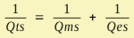

LE Electro Dynamic - Total Quality Factor Qts
| Home |
 |
Qts measures the ratio between the passband-level and the level at resonance. A value of approx Qts > 1 means an amplification of the sound pressure. However, at the same time the excursion goes up. A value of Qts < 1 means a damped resonance, which for the sound pressure and the excursion curves yield a broad transition band.
Qts is formed by two damping mechanisms:
- By mechanic damping via Rms, which gives the Mechanic Quality Factor Qms. See chapter Mechanical Parameters.
- By damping by the electric dynamic motor via BL2/Re, which gives the Electric Quality Factor Qes. See chapter Motor Parameters.
This gives the Total Quality Factor:
